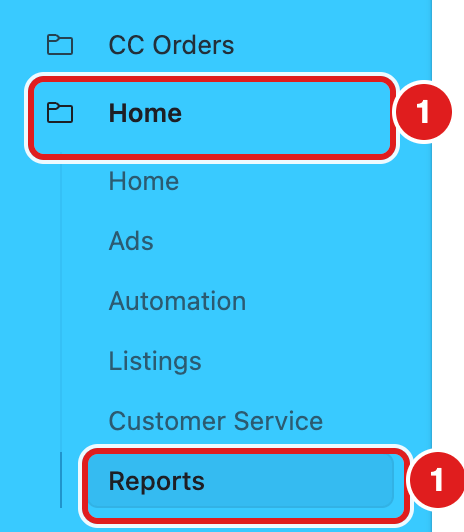
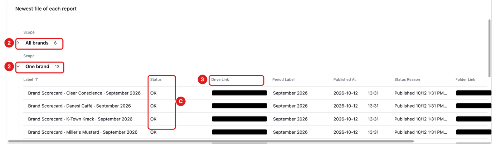
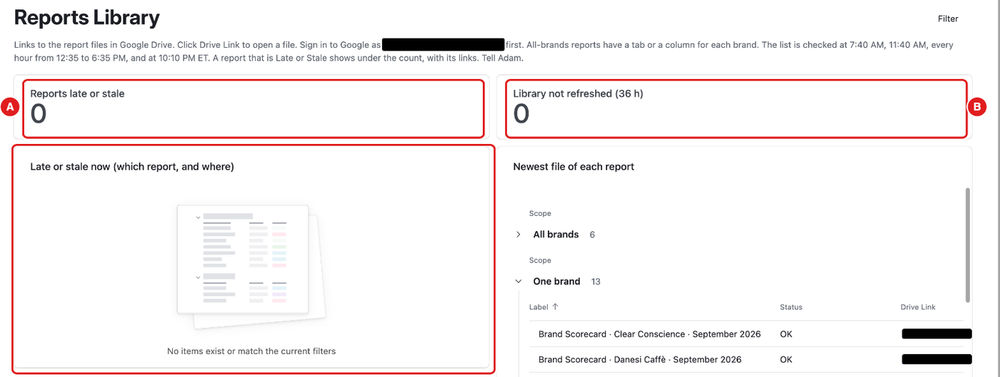
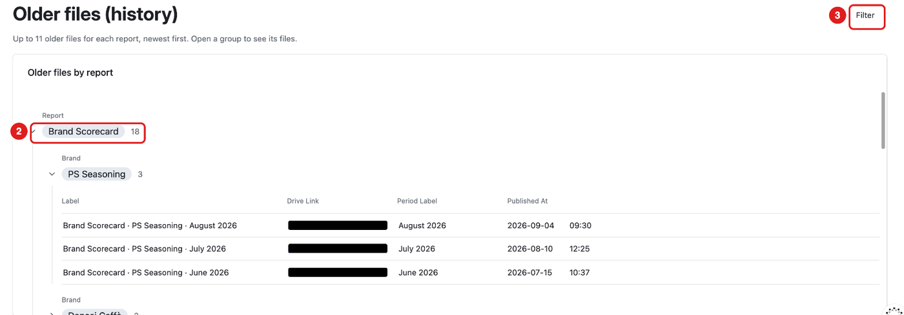
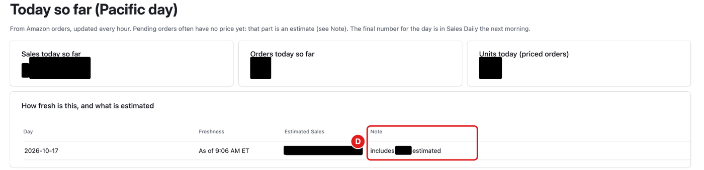
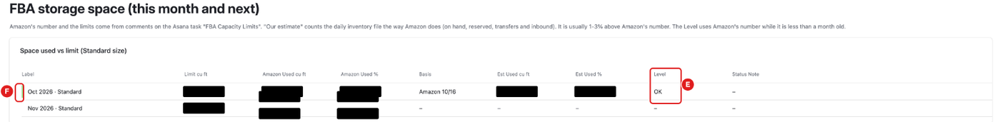
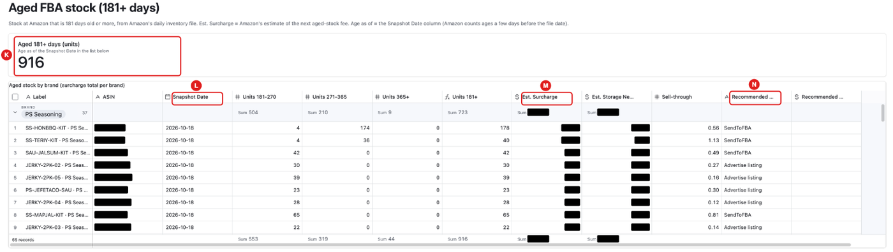
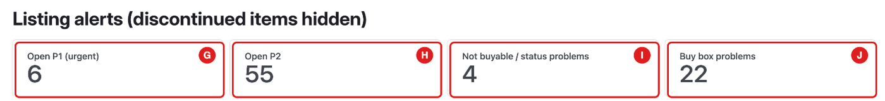

What this page is for
Home shows how the business is doing: sales, stock, POs and Amazon shipments. It is in the menu under Home.
Who uses it: Adam and Becca can open it for now. If you need access, ask Adam.
This chapter covers five parts: Reports, Today so far, FBA storage space, Aged FBA stock and Listings.
These parts only show information. Nothing here changes stock or orders.
Who checks what
| Who | When | What |
|---|---|---|
| Becca | Every morning | Today so far, and the Reports counters A and B |
| Becca | Every week | FBA storage space, and the reports Sales by Brand, Restock Pressure and Stockout Cost |
| Becca | Every month | The report Subscribe & Save, and Aged FBA stock |
| Karly | Twice a week | Listings |
Page owners: Listings and Customer Service = Karly. Ads, Campaigns, Bid suggestions and Automation = Adam.
Reports
Task: open a report
Click Home in the menu. Click Reports.

The top list is Newest file of each report. It has two groups:
- All brands – one file for all brands.
- One brand – one file for each brand.
Find the report. Click its Drive Link.
The file opens in Google Drive. Sign in to Google with your work account first.



Status
C – Status shows if the file is up to date.
| Status | What it means |
|---|---|
| OK | The file is up to date. |
| Late | The next file is overdue. |
| Stale | The file is too old. |
If a report says Late or Stale, tell Adam.
What you should see

- A – Reports late or stale is 0.
- B – Library not refreshed (36 h) is 0.
- Every report says OK.
- If a counter is not 0, look at Late or stale now (which report, and where), just under the counters. It shows which report, its status, why, when it was due, and its links. Tell Adam.
- RemBase checks the reports every hour from 12:35 to 6:35 PM ET (also at 7:40 AM, 11:40 AM and 10:10 PM). A new daily file shows within the hour.
Older files
Scroll down to Older files (history).
Click a report name. Its older files open, newest first.
To see one brand only, click Filter.


Today so far
Today so far is at the top of the Home page (menu: Home → Home).

- The first box, Today so far (as of the time shown below), shows today’s Amazon sales. The day is the Pacific time day.
- It is not a full day, and it includes estimated lines.
- It updates every hour.
- Pending orders often have no price yet. That part is an estimate. D – Note says how much is estimated.
- The final number for the day comes the next morning, in the daily sales.
- Under it, Sales (Amazon.com) starts with Last full day sales.
FBA storage space
FBA storage space is on the Home page (menu: Home → Home). It shows how much space we use at Amazon, this month and next month.

- E – Level and F – the colour bar show how full our space is:
| Level | Colour | What it means |
|---|---|---|
| OK | green | Under 85% of our limit. |
| Watch | yellow | 85% of the limit or more. |
| Over | red | 100% of the limit or more. |
- Our estimate counts our stock the same way Amazon does. It is usually a little higher than Amazon’s number (about 1–3%).
- The Level uses Amazon’s number while that number is less than a month old.
- The limits are updated once a month, around the 28th.
Aged FBA stock
Aged FBA stock (181+ days) is on the Home page (menu: Home → Home). Check it once a month.

- K – Aged 181+ days (units): all our units at Amazon that are 181 days old or more.
- The list shows the same stock by brand. Each line shows its units and M – Est. Surcharge: Amazon’s estimate of the aged-stock fee. The bottom line shows the totals.
- L – Snapshot Date: the day Amazon counted the ages. It is usually a few days before today.
- N – Recommended Action and the sale price come from Amazon. Blank means Amazon gave none.
- The list updates every morning. You cannot change the numbers.
- To record what we will do, open a product (point at the row and click the expand button). In the box Your plan, choose a Plan (Watching, Sale planned, Removal planned or Done) and write a Plan Note if needed.
Listings
Listings shows problems with our Amazon listings (menu: Home → Listings). Discontinued items are hidden.

| Priority | What it means |
|---|---|
| P1 (urgent) | The item sells 10 or more a month, and it is out of stock, not active, or its buy box is suppressed while it has stock. For our own brands, also when we lost the buy box. |
| P2 | Other real problems. |
| P3 | Low priority, for example discontinued items, other sellers’ brands, or alerts that keep going on and off. Not counted. |
- G – Open P1 (urgent) and H – Open P2 count the alerts.
- I – Not buyable / status problems and J – Buy box problems count only P1 and P2 alerts.
- Overwrite means Amazon shows something different from what we sent, for example a different title. It is a P2 alert. For the main image, Overwrite shows only when Amazon is not using our main image at all. (Amazon keeps each main image in two sizes. If either one is ours, it is not an overwrite.)
- Click an alert to open it. After you fix the problem, in the box Your check tick Checked and write a Note. Everything else on the alert is read-only.
- Caused by: some alerts happen only because of another alert. For example, a listing is not active because it is out of stock. Then Caused by names the main alert, and the side alert is not counted twice.
Common mistakes
- Opening a report while signed in to a personal Google account. Sign in with your work account first.
- Reading Today so far as the final number. It is an estimate until the next morning.
- Not telling Adam about Late or Stale. A Late or Stale report is out of date.